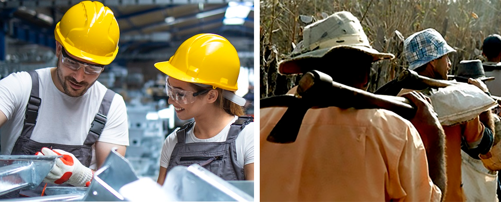

|
Objetivo 8:
Trabalho Decente e Crescimento Econômico |
|
|
No longo prazo, a desigualdade de renda e de oportunidades prejudica o crescimento econômico e
o alcance do desenvolvimento sustentável. Os mais vulneráveis, muitas vezes, têm menores
expectativas de vida e apresentam dificuldades de se libertarem de um círculo vicioso de
insucesso escolar, baixas qualificações e poucas perspectivas de empregos de qualidade.
A revitalização econômica contribui para criar melhores condições para a estabilidade e
a sustentabilidade do país. É possível promover políticas que incentivem o
empreendedorismo e a criação de empregos de forma sustentável e inclusiva. O ODS 8
reconhece a urgência de erradicar o trabalho forçado e formas análogas ao do trabalho
escravo, bem como o tráfico de seres humanos, de modo a garantir a todos e todas o alcance
pleno de seu potencial e capacidades.
|
|

|